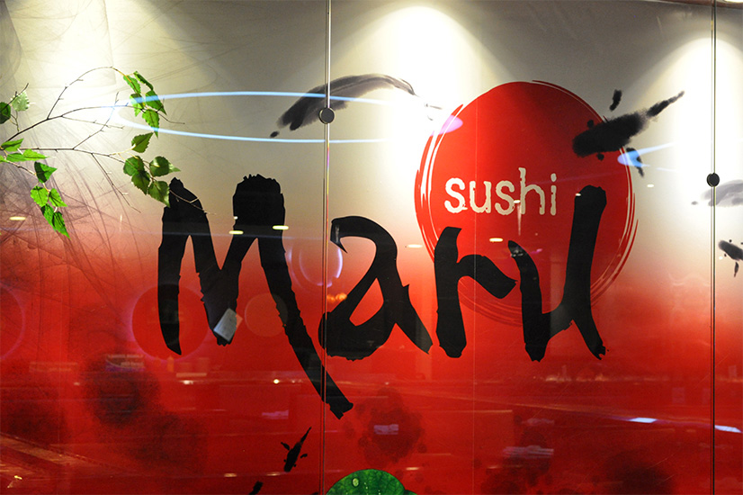
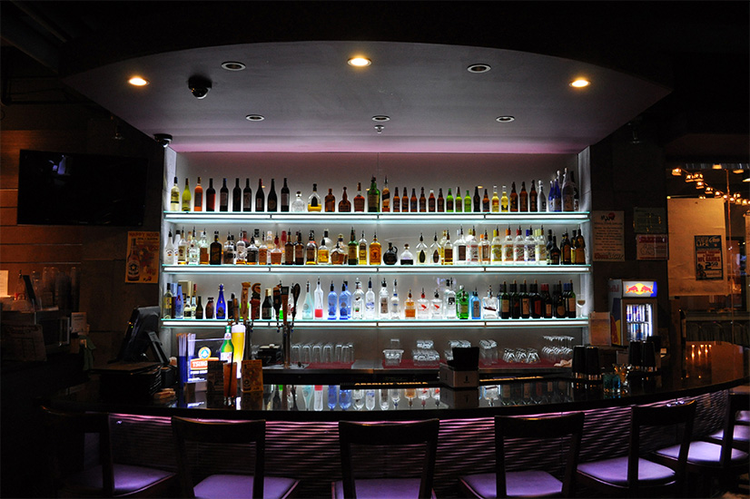
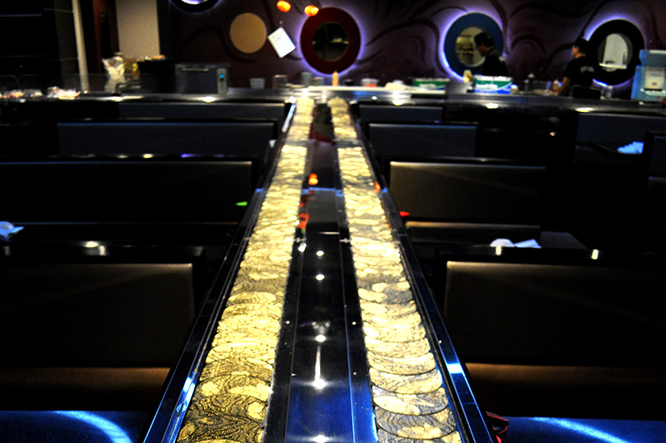
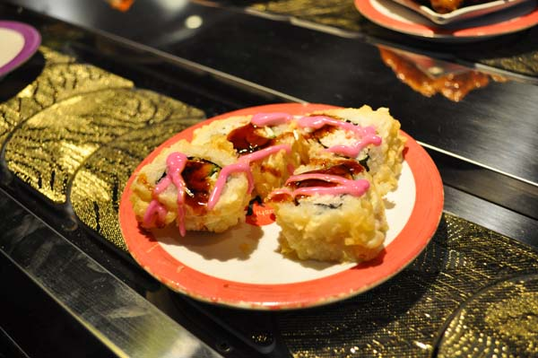
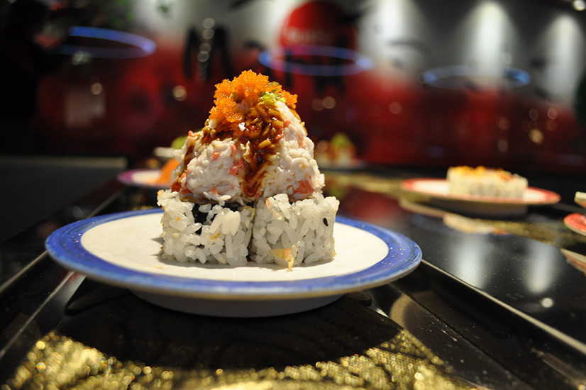
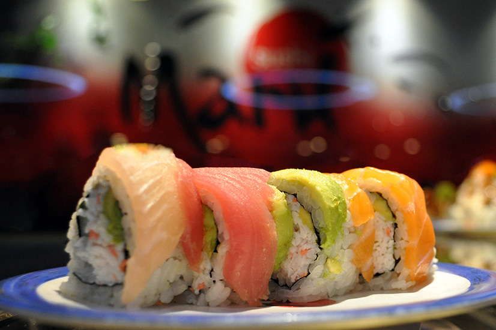

- 
- 
- 
- 
- 
- 
About
Sushi Maru invites you to enjoy our kaiten-zushi dining experience serving both traditional and creative sushi in a relaxed and friendly atmosphere. “Maru” means round or perfection. Our extensive menu features a wide variety of the high quality sushi and sushi rolls, as well as tataki, udon, cooked appetizers and desserts for everyone. The selection is not limited to sushi…see our menu. We are proud of our professional and exceptionalservice that we extend to each of our guests. Great with kids and beginner sushi eaters; we not only offer a comprehensive sushi menu but also a wide selection of non-sushi/seafood items such as Honey Walnut Shrimp or even Popcorn Chicken.
Conveyor belt sushi, (also called sushi-go-round) mainly by foreigners living in Japan, is the popular English translation for Japanese fast-food sushi. In Australia, it is also known as sushi-train (as the sushi goes around a track on a train rather than a conveyor belt.) In South Korea, conveyor belt sushi has become popular and is known as “revolving sushi”. Kaiten-sushi is a sushi restaurant where the plates with the sushi are placed on a rotating conveyor belt that winds through the restaurant and moves past every table and counter seat. Customers may place special orders but most simply pick their selections from a steady stream of fresh sushi moving along the conveyor belt. The final bill is based on the number and color of plates of the consumed sushi.
Hours
- Monday
- : 11:00 - 9:30
- Tuesday
- : 11:00 - 9:30
- Wednesday
- : 11:00 - 9:30
- Thursday
- : 11:00 - 9:30
- Friday
- : 11:00 - 10:00
- Saturday
- : 11:00 - 10:00
- Sunday
- : 12:00 - 9:00
Menu
Hover over items for details


Contact
Address
River Park Square
808 West Main Avenue Suite #105
Spokane, WA 99201
Contact
(509) 455-3900